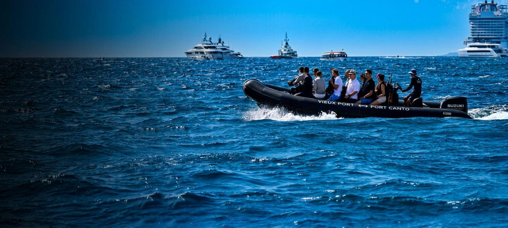

Conferences · Boat & Yacht
Cannes Yachting Festival 2027
- Dates
- –
- Venue
- Vieux Port and Port Canto, Cannes
- Location
- Cannes, France
- Format
- In-person
- Category
- Boat & Yacht
- Industry
- Yachting
- Organiser
- RX France
- Official website
- https://www.cannesyachtingfestival.com/en-gb/practical-information/plan-your-visit.html
About
One of the world's leading in-water yachting festivals, opening the Mediterranean autumn show season.
Topics: yachting festival, superyachts, boat show.
No organiser attendance figure found on the official pages fetched 24 Nov 2026 for this upcoming edition. Ranked by our estimated size tier 'large' (30,000-100,000 attendees/visits), a judgement from format, venue and scale, not an official number.
Sources
- Official — https://www.cannesyachtingfestival.com/en-gb/practical-information/plan-your-visit.html
- Official — https://www.cannesyachtingfestival.com/en-gb.html
Hotels
- Five Seas Hôtel Cannes — 5★ · 22 rue du Bivouac Napoléon, 06400 Cannes, France · 0.5 km from the venue · Price on request
- Hôtel Barrière Le Majestic — 5★ · 10 Boulevard de la Croisette, 06400 Cannes, France · 0.5 km from the venue · Price on request
- Mondrian Cannes — 5★ · 45 Boulevard de La Croisette, 06400 Cannes, France · 0.8 km from the venue · Price on request
- JW Marriott Cannes — 5★ · 50 boulevard de la Croisette, 06400 Cannes, France · 0.9 km from the venue · Price on request
- Carlton Cannes, a Regent Hotel — 5★ · 58 boulevard de La Croisette, 06400 Cannes, France · 1.0 km from the venue · Price on request
- Hôtel Belle Plage — 5★ · 2 rue Brougham, 06400 Cannes, France · 0.6 km from the venue · Price on request
- Hôtel Splendid Cannes — 4★ · 4 rue Félix Faure, 06400 Cannes, France · 0.4 km from the venue · Price on request
- Hôtel America Cannes — 4★ · 16 Rue Notre Dame, 06400 Cannes, France · 0.6 km from the venue · Price on request
- Best Western Hôtel Univers Cannes — 4★ · 2 rue Maréchal Foch, 06400 Cannes, France · 0.6 km from the venue · Price on request
- Hôtel Barrière Gray d'Albion — 4★ · 38 rue des Serbes, 06400 Cannes, France · 0.6 km from the venue · Price on request